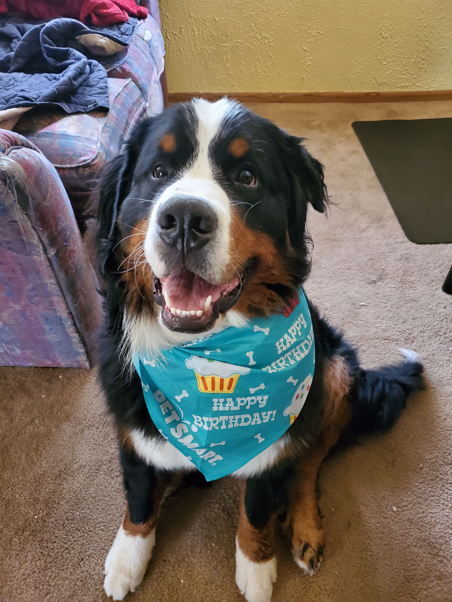
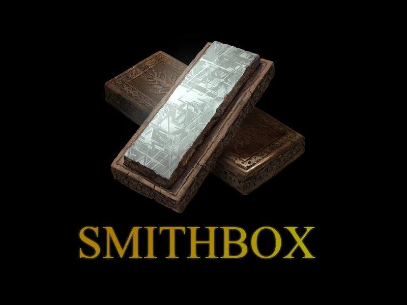

Acknowledgements & Statements
Thanks to those who have contributed to the project.
AI Statement
Portions of these tools are assisted by GitHub Copilot (GPT-5.1-Codex-Max). Humans own final review, testing, and data validation before anything ships.
Art assets on the site are either extracted directly from the game, donated by community artists, or are paid commissions. AI is only used to upscale icons that would otherwise be too poor of a resolution to use.
Development

Paraphraze
Core developer and app designer.
Support
Acarii
Relic Effect data exports, feedback, and error validation.
gazer500
Testing, feedback, and advanced mathematics.
Artwork
Smile
Creating incredible illustrations for the project.
Tooling
Visual Studio Code
Editor backbone for the project.
GitHub & GitHub Copilot
Versioning, collaboration, and AI pair work.

SmithBox
Testing ground for data exports.
SSMS
SQL authoring and SmithBox data pipeline.